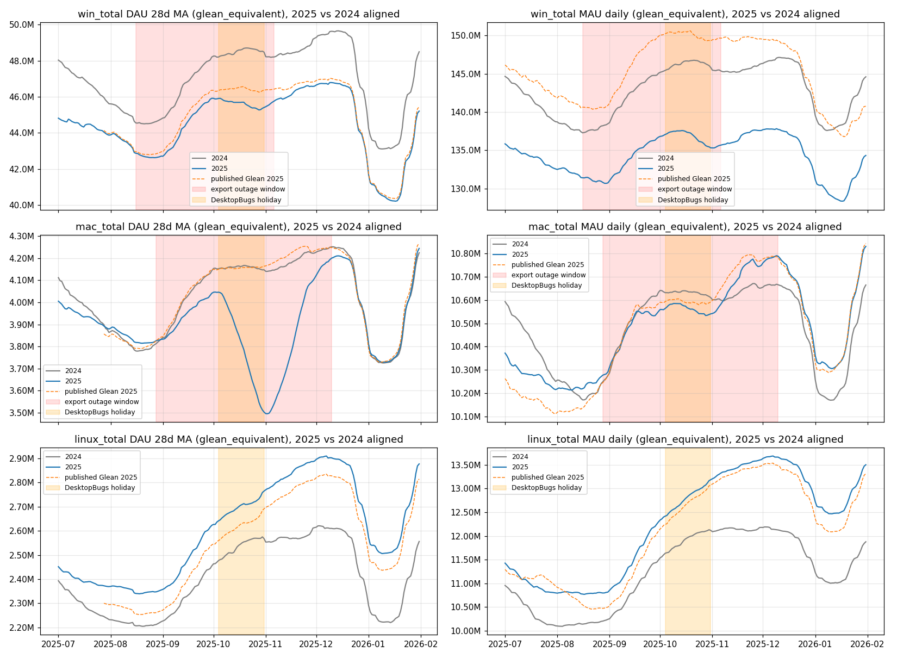

data-official/2027-glean-draft/_index.md.Produce a draft forecast of Firefox Desktop MAU (headline) and Desktop DAU (secondary) through 2027-12-31, trained on the legacy-to-glean project's Glean-equivalent history as if it were real Glean history, because Glean desktop telemetry alone is too short to train on and Legacy telemetry shuts down at the end of 2026. The headline statistic is raw daily MAU on 2027-12-15; a 2026-12-15 value is produced too. This is a wholly separate exercise from the monthly refresh cycles: all head- and tailwinds are off in the first build and are re-added one at a time afterwards, with the combinatorics machinery ready for that. Mobile is not part of this; the normal cycle supplies it. Method rule from Brendan: our methods on their data.
| # | Question | Decision |
|---|---|---|
| 1 | Metrics | Desktop DAU and desktop MAU only. Mobile comes from the normal September/October update. |
| 2 | Headline statistic | Raw daily MAU on 2027-12-15. DAU is a secondary track. Also produce 2026-12-15. |
| 3 | Target series | glean_equivalent, knowing it sits below published Glean. Corrected by the export agent: on DAU the world gap is within 0.2% through mid-2026 (−0.3 to −0.5% Aug–Sep 2026); the ~0.8% is MAU (Windows −0.80% on the Fx 153 test days), of which duplicate-id inflation is 0.5–0.7 and the unexplained remainder about −0.25. Decision trail in §7. |
| 4 | Linux | In. |
| 5 | Tile layout | OS × country (Windows / Mac / Linux per country) is acceptable for this forecast. A Windows-version split has been passed to the export project as a future to-do. |
| 6 | Countries | Production's 15 + ROW: US BR CA MX AR IN ID JP CN DE FR PL RU IT IR. |
| 7 | Iran | Adopt the current in-package counterfactual-fill approach (regenerated for this layout; §5 step 3). |
| 8 | Training start | 2020-01-01. Non-stationarity of older Glean code is known and expected; the forecast is expressed in the Glean "effective version" of the most recent Firefox. |
| 9 | Seam | The most recent data we have; splice to today if needed. Answered in §7: the history is a Fx 148–153-state counterfactual, Legacy input exists through 2026-10-10, and a headline-definition continuation can be produced by a top-up run in the export repo (needs your go-ahead there). |
| 10 | Comparison forecasts | Against both Legacy and real Glean; Legacy is more important. |
| 11 | Legacy outage windows | Mask. Brendan expects existing holidays to cover this; measurement below (§4) shows they cover only part — open item §6. |
| 12 | Adjustments | Drop all (h t u e i j l o p), add back later; build for combinatorics from the start. |
| 13 | Model parameters | October locked desktop config g01 (§5 step 4). |
| 14 | Uncertainty | Combined: translation band + Prophet predictive interval. |
| 15 | Location | Cycle-style: data-official/2027-glean-draft/. |
| 16 | Branch | glean-2027-forecast off october-forecast. |
| 17 | Boundaries | Shared repo. Branch pushes are fine; nothing goes to main, the KPI sheet, or the BigQuery output table. |
| 18 | Inputs | Track the export files in git (gitignore exceptions added). |
inputs/legacy_to_glean_export/| file | grain | rows | note |
|---|---|---|---|
glean_equivalent_dau_history_cells_fc15.parquet | 53 series × 3,173 days: 45 OS×country cells (win/mac/linux × 15 countries), win_ROW / mac_ROW / linux_ROW, 5 roll-ups | 168,169 | cells + ROW = OS total exactly, re-verified here on every day |
glean_equivalent_mau_history_cells_fc15.parquet | same, rolling-28-day MAU | 168,169 | same identity holds |
glean_equivalent_{dau,mau}_history_rollups.{parquet,csv} | 5 roll-ups only | 15,865 | the export of record; percent bands |
fc15_cells_summary.csv | per cell | — | factor_source, pool_a_fail, mean 2026 level |
Date range 2018-01-01 → 2026-09-08, submission-dated. Headline column glean_equivalent =
translated_from_legacy + glean_only_steady. Published Glean is in the same rows from
2025-05-22 (published_glean_dau / _mau). Bands: percent (valid on 28-day means for DAU, daily for
MAU) and absolute units, per cell; ROW rows carry no bands.
legacy_dau matches the sum of our
legacy desktop pull to within 0.01% on every shared day 2020–2026. The translation is a slowly varying multiplier
(28-day Glean/Legacy ratio 1.035–1.039 across 2020–2026) plus a constant-share Glean-only term.
plots/legacy_outage_windows_2025.png. Blue: 2025 headline; grey: 2024 aligned by calendar day; orange dashed: published Glean 2025. Red: the export project's outage window per OS; orange: the existing DesktopBugs holiday (2025-10-04..10-31).| series (28d MA, 2025 ÷ 2024) | Jul 1–Aug 15 | inside window | worst day | Oct 4–31 (holiday) | Dec 15–Jan 31 |
|---|---|---|---|---|---|
| Windows DAU | 0.953 | 0.949 | 0.933 (2025-10-27) | 0.940 | 0.936 |
| Mac DAU | 0.994 | 0.943 | 0.844 (2025-11-02) | 0.913 | 1.000 |
Each step names its artifact, its check, and the tests/docs it carries (per CLAUDE.md, plans include both).
DataSource.GLEAN_HISTORY_DESKTOP ("glean_history_desktop", short code gh) to queries.py,
with no QuerySpec: it is file-fed. get_queries skips it; the pre-flight BigQuery check is bypassed for it.update_desktop_format is unchanged (segment JSON {"os": population}),
validation.py gains windows / mac / linux as allowed os values for this data source only, so
production validation is untouched.tests/test_glean_history.py — the new source is excluded from BigQuery query building; validator accepts the new
segments only under gh.src/mozaic_daily/glean_history.py: reads the two fc15 parquets, emits per metric a frame with columns
x, country, windows, mac, linux, y (exactly one flag True per row; ROW rows from the export's {os}_ROW),
glean_equivalent as y, dates ≥ 2020-01-01, and writes mozaic_parts.raw.glean_history.desktop.{DAU,MAU}.parquet
plus a sidecar recording source sha1s and the column choice."MAU" is not in the Metric enum (only Existing Engagement MAU). Add
Metric.MAU (short code M) rather than mislabel the series.{os}_total on every day; row count = 16 countries × 3 OS × days; no NaN.Facts from the export agent (§7): the history is the Fx 148–153 Glean state applied to every Legacy day; the Legacy input is available in BigQuery through 2026-10-10 (the table stopped at 09-08 only because that was the data end at build time); the SDK 68 step at the 2026-08-23 seam is −0.1 to −0.2 pp on DAU and MAU at OS level (Windows × US DAU: +0.01 pp), so no level correction is needed on Win/Mac DAU and at most −0.2 pp on MAU. Three ways to continue the series to early October, all on the headline's definition (published Glean minus temporary minus duplicate-id, never published verbatim):
Whichever is chosen: horizon → 2027-12-31, seam-step diagnostic per OS, human go/no-go before adoption. The Fx 155 re-measurement (late October) may re-set the Win/Mac reference; the forecast would then be one version state behind, with a known offset of −0.4% Windows / −0.7% Mac at client level and ~0 on published.
legacy_desktop with modern_windows/winX columns and will not splice onto
windows/mac/linux frames (mozaic's splice_fill requires identical columns). Regenerate with the
generate_iran_fill.py method on the translated IR cells: train on IR before 2026-02-28, forecast the gap,
harvest per-population; DAU window 2026-02-28..05-25, MAU window 2026-02-28..06-21 (the FILL_FORMAT_SPEC rule).additional_fills (no package edit). Seam-scaling stays a human go/no-go.Two candidate mechanisms, recommendation first:
ADDITIONAL_HOLIDAYS for the new source: one window per OS
(Windows 2025-08-16..11-06, Mac 2025-08-28..12-10), applied as the union. Holidays are per country, not per population, but
holiday_smart measures the effect per tile and only acts when the dip exceeds holiday_threshold (−3.2%),
so Windows and Linux tiles see little effect from the Mac-only part of the window. The calendar populates 2025 only, so it
cannot leak into the forecast years. Cheap, matches "we already handle this with holidays".scripts/run_glean_history_forecast.py: injects the adapter frames (no BigQuery), uses
main(model_configs=...) with the October g01 lock
(cps 0.1649, cpr 0.814, ncp 40, recent 17, sps 0.00825, regime multiplicative, thresh −0.032, radius 5/3, floor −0.6),
all adjustments disabled, DAU and MAU, writes mozaic_daily_forecast.<seam>.gh-D+M.raw.parquet + sidecar + fitted pickles under
desktop_glean_history_g01_<seam>/.csv/glean2027_canonical_curves.csv: world + per-OS, DAU 28d MA (display_ma from the package) and daily MAU, actuals from 2020 and forecast to 2027-12-31;
csv/glean2027_dec15_summary.csv for 2026-12-15 and 2027-12-15.glean2027_canonical.ipynb that reads the parquet and renders everything.mozaic_daily.intervals on the fitted pickle (1,000 world sample paths; for MAU the band is on the daily series, for DAU on the 28d MA).global_all row, held at its last value through the horizon).h is left off. Caveat: it uses the Windows-version layout and a 2020 Legacy history; the comparison is in Legacy units (×~1.036 to Glean-equivalent).telemetry.active_users_aggregates, mau column, same grouping) and one run of the same runner on Legacy data. Approval item.glean_telemetry.active_users_aggregates from 2025-05-22 (the clean overlap), DAU and MAU, same runner. Short history, so expect it to be weak; reported for completeness.applies_to_forecast_start today; add a applies_to_data_source check so a cycle spec can never leak into gh runs and vice versa.h, t, u) re-add trivially. Per-tile overlays (e i j l o) target the modern_windows segment; in the OS layout they would land on windows, which also contains older Windows. That mapping is a decision for when they come back, not now.data-official/2027-glean-draft/_index.md (present), this page (regenerated each revision), scripts/_index.md and CLAUDE.md entries for the new runner and module, tests/_index.md for the new test file, data-official/adjustment_codes.yaml unchanged.| # | Item | Decision |
|---|---|---|
| 1 | Outage masking | Holiday-calendar union window (project-local calendar, per-OS windows, 2025 only). |
| 2 | Legacy MAU comparison pull | OK to add (one plain-MAU BigQuery pull on telemetry.active_users_aggregates). |
| 3 | Real-Glean comparison start | The export project's definition: 2025-05-22. |
| 4 | Interval combination | Still open — needs a plainer explanation (asked again in chat). Until then both components are reported side by side. |
| 5 | New enum values in shared code | Fine, on a tracked branch: glean-2027-forecast is pushed to origin. |
| 6 | Horizon end | 2027-12-31 confirmed. |
| 7 | Splice route | Top-up run in the export repo; the export agent asks Brendan for the go-ahead there. Until it lands, build 1 runs with seam 2026-09-09 and is rerun on the continued history. |
| 8 | Excluded terms as adjustment candidates | Yes: register the duplicate-id floor and the open temporary term as display-layer candidates for the combinatorics (not applied in build 1). |
~/work/mozaic-forecasting-official, a shared GitHub repo,
editable-installed into this venv on branch configurable-model-params) must only be edited on a non-production branch. The procedure as written
needs no package edit: the fill goes in through additional_fills and the calendar through additional_holidays, both existing hooks.
If an edit becomes unavoidable it goes on a glean-2027-forecast branch there, in a separate worktree so this venv keeps running production code.
(2) Be open to varying the model parameters for MAU — a rolling-28 series need not behave like DAU under the g01 lock; any MAU-specific
config is announced before it is run and recorded beside the DAU lock.Root is D-076: the table exists to produce the equivalent of current Glean telemetry for forecasting, so 2025 instrument-state offsets are not in the mapping. D-088/089/094 split Linux published into a linked translation plus a Glean-only arm, the arm into a constant base (in the headline) and an episodic excess (zero in history, carried for a Glean-side filter to act on); D-109/110 made MAU the flagship and put the pre-Fx-148 duplicate-id inflation in its own column; D-116/117 fixed the names. Not yet formally ratified as "canonical history" (HANDOFF lists it as the next owner decision).
| term | what it is, physically | size over the overlap (% of published) | expected path |
|---|---|---|---|
glean_only_steady (in headline) | Glean-only clients as a constant share; on Linux, baseline-ping-only profiles (distro / container / CI builds), flat; on Win/Mac <1.2% | DAU: world 0.9, win 0.8, mac 0.3, linux 3.2–3.4. MAU: world 3.0–3.4, win 2.3–2.5, mac 1.1, linux 12.7–14.3 | persists; Windows share slowly declining (0.92% → 0.64%) |
glean_only_temporary (excluded) | Linux US/DK: read as bot-like (94–97% single-day clients, step onsets Mar/Apr 2026, no root cause); FR/CN on MAU: Glean-only members | DAU: world ≤0.2, linux 1.4–3.3 (2026). MAU: world 0.4–2.3, linux 6–16 (2026), win 1.4 → 0.0–0.1 | episodic, unknown end; in 2027 either filtered out of Glean or declared permanent, undecided. FR/CN shrinking, not zero |
duplicate_id_inflation (excluded, MAU only) | duplicate Glean ids from pre-Fx-148 builds (client-id regeneration bug, fixed Fx 147/148) | MAU: world 5.7–5.9 (2025) → 0.5–0.6 (Jul–Sep 2026); win 6.5–6.7 → 0.6–0.7; mac 0; linux 0.2–0.5 | slow decay to a floor near 0.5% while 14% of Windows MAU is still on pre-148 builds |
Implication for 2027: forecasting the headline means the published Glean MAU will sit above the forecast by the duplicate-id floor (~0.5%) plus whatever temporary term is still open, unless those are carried as explicit adjustments. That is a natural candidate for the first re-added adjustment in the combinatorics (§5 step 9).
Recorded in the export project's open-questions list and HANDOFF as a future item attributed to you via this session.
inputs/legacy_to_glean_export/fc15_overlap_gap_by_month.csv; the seam step per roll-up and cell in fc15_seam_step_2026-08-23.csv. Linux headline runs 2–4% above published in 2025; treat Linux as unreliable to 2–3%.Artifacts: desktop_glean_history_g01_2026-09-09/<slug>/mozaic_daily_forecast.2026-09-09.gh-D+M.raw.parquet (+ sidecar, pickle,
parameters.json); curves csv/glean2027_canonical_curves.csv, summary csv/glean2027_dec15_summary.csv; plots
plots/glean2027_mau_daily.png, plots/glean2027_dau_28ma.png, plots/glean2027_{dau,mau}_by_country.png.
Training rows are byte-identical to the adapter frames (Iran's crater stays in the actuals; the fill is used only for fitting). Forecast took 4 minutes.
| metric (world, all OS) | 2025-12-15 (history) | 2026-12-15 | 2027-12-15 | YoY 26→27 |
|---|---|---|---|---|
| MAU, raw daily (headline) | 161,791,091 | 157,567,444 | 152,187,309 | −3.4% |
| DAU, 28d MA | 53,828,767 | 52,687,632 | 50,663,982 | −3.8% |
| MAU windows / mac / linux | 137.4M / 10.75M / 13.6M | 131.1M / 10.9M / 15.5M | 122.7M / 11.3M / 18.2M | −6.4% / +3.5% / +17% |
| DAU windows / mac / linux | 46.7M / 4.21M / 2.89M | 45.0M / 4.29M / 3.43M | 42.2M / 4.37M / 4.12M | −6.2% / +2.0% / +20% |
_shakedown_nofill_2026-09-09/ for the record).
Two things are wrong and both trace to China (§9).The export agent's D-118 continuation (2026-09-09..10-09, same cells and definitions; e(OS) and bands carried, open Linux windows extended, Fx 155 not
re-measured) was appended through glean_history.append_continuation and build 2 run at seam 2026-10-10. Outputs now in csv/ and
plots/; build 1's are kept under build1_seam2026-09-09/. Artifacts in desktop_glean_history_g01_2026-10-10/.
| world, all OS | build 1 (seam 09-09) | build 2 (seam 10-10) | delta |
|---|---|---|---|
| MAU 2026-12-15 | 157,567,444 | 158,870,626 | +1,303,182 (+0.8%) |
| MAU 2027-12-15 | 152,187,309 | 156,397,703 | +4,210,394 (+2.8%) |
| DAU 28d MA 2026-12-15 | 52,687,632 | 53,115,919 | +428,287 (+0.8%) |
| DAU 28d MA 2027-12-15 | 50,663,982 | 51,865,593 | +1,201,611 (+2.4%) |
o), 2026-10-12Brendan chose option 1 (§9 below records the original options). Mechanism: project-local copy of the October o spec with
flag_column = windows, filed as mozillaonline/mozillaonline.glean_history.json (outside the production resolver's glob, test-locked),
applied through --overlay-spec; the adapter now emits whole-people integers because the overlay subtractor's Int64 arithmetic rejected floats, so
the plain build was rerun on the identical integer inputs to make an exact on/off pair. Artifacts: desktop_glean_history_g01_2026-10-10/ (plain,
.raw.) and desktop_glean_history_g01_o_2026-10-10/ (.adj-o.). Build 3's curves are the ones in csv/ and plots/;
the plain pair member's are under build2_plain_seam2026-10-10/. Comparison plot: plots/glean2027_dau_by_country_plain_vs_o.png.
| world, all OS | plain (no o) | build 3 (o) | delta |
|---|---|---|---|
| MAU 2027-12-15 (headline) | 156,462,943 | 156,462,943 | 0 — the overlay machinery is DAU-only |
| MAU 2026-12-15 | 158,983,000 | 158,983,000 | 0 |
| DAU 28d MA 2027-12-15 | 51,830,050 | 50,943,464 | −886,586 (−1.7%) |
| DAU 28d MA 2026-12-15 | 53,086,880 | 52,954,587 | -132,293 |
What the correction did and did not do:
o the same way) is the check.mac_cn cell also doubled in June 2026 (31K → 63K → 70K; pooled factors, mac_mid), so the migration is visible on Mac in the translated series even though production treats it as Windows-only. The CN mac tile's forecast goes negative in both builds (monthly mean −208K plain, −573K with o, on a 70K tile), and because mozaic clips only the world paths, it drags CN's total and the world by that amount in late 2027.overlays.py, metric_key = Metric.DAU.value). The CN MAU tiles still carry the step and still swing 9M → 2M in late 2027. The headline metric did not get the correction.The world 90% half-width on the 28d MA at 2027-12-15 is 25.2M (build 3) / 27.7M (build 1). I measured the production October desktop pickle
(data-official/2026-10/desktop_g01_2026-10-05/, Legacy, Windows-version layout) with the same code: half-width 1.0M at 2026-12-15 but
19.9M at 2027-12-15. The g01 configuration's sample paths diverge with horizon (40 changepoints, range 0.814, prior scale 0.1649, multiplicative
regime); September's quoted ±1.97M was a three-month horizon. The CN tiles made ours worse, but even fixed it would be ~20M. For a 2027 target the Prophet
predictive interval is not a meaningful uncertainty statement; the translation band is, and a backtest-based error (how far past 12–15-month forecasts
missed) would be. Decision 14 ("combined") needs revisiting on that basis.
o on DAU and MAU, split across windows/mac (2026-10-12, current draft)Brendan: "write your approach and run the checks, then rerun the forecast". Approach of record:
mozillaonline/MAU_OFFSET_APPROACH.md. Producer: scripts/build_glean_history_cn_offsets.py. Measured on China's own
June 2026 step in the export: MAU per DAU of the migrated users 2.88 (windows) / 3.20 (mac), against a 3.74 / 3.41 baseline; the MAU world
curve is the DAU curve's trailing 28-day mean × 2.894; population shares from the steps (DAU 96.5 / 3.5, MAU 96.2 / 3.8, linux 0).
overlays.py now applies one piece per (metric, population); production specs behave exactly as before (test-locked).
Checks (all passed, through the real appliers): residual China step after subtraction +5.3% / +3.6% on DAU (windows / mac), +3.8% / +2.0% on MAU,
against raw steps of +56–73%; subtract-then-add-back returns every China training row to the export within 0.5; MAU curve non-negative, zero before
June 2026. Plot plots/cn_offsets_check.png. One visible residual: the MAU offset lags the real MAU step by its 28-day window, leaving a
~1M bump on China windows MAU in June 2026 after subtraction; recorded, not corrected.
| world, all OS | plain | o on DAU only (build 3) | build 4: o on DAU + MAU |
|---|---|---|---|
| MAU 2027-12-15 (headline) | 156,462,943 | 156,462,943 | 153,962,747 (−1.6% vs plain) |
| MAU 2026-12-15 | 158,983,000 | 158,983,000 | 158,657,822 |
| DAU 28d MA 2027-12-15 | 51,830,050 | 50,943,464 | 51,027,985 |
| DAU 28d MA 2026-12-15 | 53,086,880 | 52,954,587 | 53,038,856 |
csv/glean2027_build_comparison_seam2026-10-10.csv; plots plots/glean2027_{mau,dau}_by_country_plain_vs_o.png.o behaves), or not? I recommend accepting.o now a data correction inside the raw build, the droppable set for this forecast is empty until candidates are registered (duplicate-id floor, open Linux temporary term, per decision 8). Register them now as display-layer specs, or after the comparisons?History: options recorded before build 3 — (1) apply o as a data correction (chosen), (2) keep CN raw, (3) fold CN into ROW. After build 3 — (a) extend the correction to Mac and MAU (chosen: build 4), (b) fold CN into ROW, (c) caveat.
branch glean-2027-forecast (off october-forecast), pushed through build 1 data-official/2027-glean-draft/ _index.md, PROCEDURE.html inputs/legacy_to_glean_export/ 11 files, tracked raw_glean_history_2026-09-08/ adapter output (regenerable, not tracked) + glean_history_inputs.meta.json iran_fill/ finalized fill (tracked) + drafts, seam diagnostics, plots desktop_glean_history_g01_2026-09-09/ build 1 (float inputs) _superseded_float_inputs_g01_2026-10-10/ build 2 on float inputs (superseded by the integer rerun) desktop_glean_history_g01_2026-10-10/ plain build, integer inputs (pair member) desktop_glean_history_g01_o-dauonly_2026-10-10/ build 3, o on DAU only (.adj-o., superseded) desktop_glean_history_g01_o_2026-10-10/ build 4, o on DAU + MAU with the windows/mac split (.adj-o.) — current mozillaonline/ the o spec copy + DAU curve + derived MAU curve + MAU_OFFSET_APPROACH.md + measurements raw_glean_history_2026-10-09/ adapter output with the continuation _shakedown_nofill_2026-09-09/ runner shakedown without the fill (record only) csv/, plots/ build-4 curves, summary, plots, 3-build comparison; build1_seam2026-09-09/, build2_plain_seam2026-10-10/, build3_o-dauonly_seam2026-10-10/ keep the earlier ones intervals/ build-1 DAU Prophet bands (see the band note above)